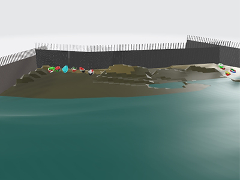
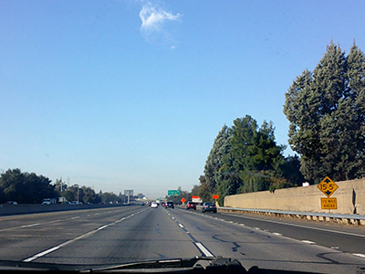

Project 1: Guiding Lights
Project 2: Unwelcome
Project 3: Just Today
I am a digital media artist who focuses on digital collage work, but I am always looking for ways to expand my mediums and artistic practice. Therefore, all the projects which you see on this website focus on digital video and 3D modeling. Most of my work is drawn from personal experiences and my reflections of previous memories, or moments. Additionally, I like to incorporate themes of social issues and escapism; and my works incorporate these things in various ways. My intentions for doing these things are to make people think and to give them a moment of reflection, so they can be guided towards making decisions- for how they can create change in society.
Project 1: Guiding Lights focuses on the journey of Yeonmi Park- a woman who fled North Korea after experiencing the cruelties of an authoritarian dictator. Park experienced many hardships, such as being forced into prostitution, crossing a desert, and crossing mountains, during her journey. Nonetheless, she persevered by using her knowledge of the North Star (for guidance) and eventually found refuge in South Korea- prior to leaving for the U.S where she became a citizen. Even though I understand that Park was more fortunate than most North Koreans, particularly since many of them don’t get this opportunity for a better life, I feel as if she has become a symbol of hope for these people who live in this oppressive cruelty. Therefore, I wanted to commemorate her by recreating some of the things on her journey. The model’s large star, for instance, is incorporated as a symbol of guidance. Other things that I incorporated in this scene were the terrain, the night sky backdrop, and the daylight backdrop, which are meant to represent Park’s long, grueling journey- across the mountains and through the Mongolian Desert.
Project 3: Just Today focuses on another, personal journey, which was my trip to San Francisco during the time of COVID-19. I was inspired to create it since I realized that COVID-19 has created isolation for various people, and I wanted to give a sense of escapism and appreciation- for the world beyond our places of quarantine and places of quarantine. Because of this, I decided to document my trip from Sacramento, to Davis, and then to San Francisco, all with the help of a camcorder. My initial plan was to document the various places that were open in these areas, but I remember that someone suggested I somehow incorporate my voice into it- as either a narration or spoken word poem. Personally, I liked that idea since I thought it would make the piece more personal and emphasize the idea of escaping the isolation for just one day. Therefore, I composed the poem- “Just Today”- to create a reflective narrative of this journey. Moreover, I included a voiceover of me reciting the various lines in this poem in the various camera shots- so I could emphasize this personal narrative and make it seem like it was a personal journey.